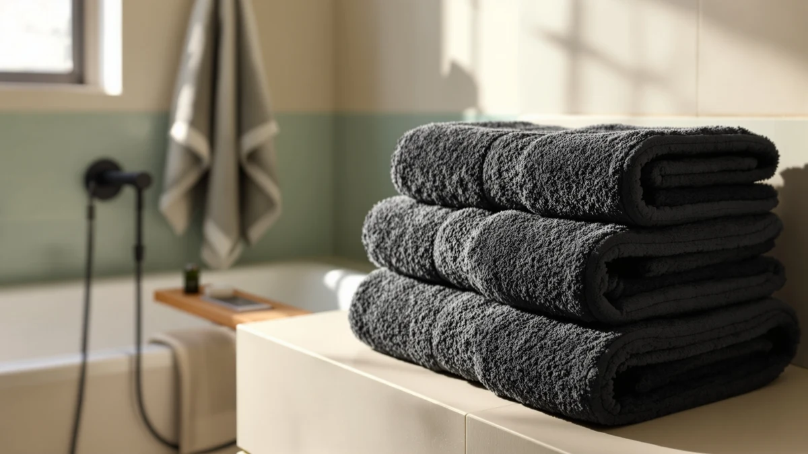

White Classic Luxury Black Review (2026): Worth It?
Prices and picks verified as of October 2026. Independent, reader-supported reviews.


Quick Answer
The White Classic Luxury Black Bath set is the strongest pick in this comparison because it gives you eight matching 100% cotton pieces for $39.99, the same price Chakir Turkish Linens charges for only four pieces. If you want a lighter color or fewer pieces, the White Classic Luxury Bath Towel and the two Chakir sets below cost the same but cover less ground.
Our pick: White Classic Luxury Black Bath — $39.99 Check Price on Amazon
Bottom line: our top pick is the White Classic Luxury Black Bath Towel Set of 8 - Soft 100% at $39.99.
Things to Know Before You Buy
- Piece count varies more than price does. All four products in this comparison list at $39.99, but you get eight towels from White Classic and only four from each Chakir Turkish Linens set.
- Every product here is 100% cotton. Material isn't the differentiator in this comparison; coverage and color are.
- Dark cotton towels can transfer dye in early washes. Wash the White Classic Luxury Black Bath set separately from light fabrics for the first several loads.
- None of these four products carry a published Amazon rating or review count. This review is built on manufacturer specs, pricing, and general owner-reported care patterns rather than a star average.
- Chakir sells its 4-piece set under two separate color listings. The two Chakir ASINs in this comparison are the same set in different colors, not different products.
This white classic luxury black review compares the 8-piece, 100% cotton towel set from White Classic against three alternatives priced at the same $39.99: a second White Classic towel and two Chakir Turkish Linens 4-piece sets. All four products share the same cotton composition and nearly identical pricing, so what matters is how much coverage you get for your money and whether a darker, matched eight-piece set beats a smaller four-piece alternative.
White Classic's black set stands out mainly because of what it includes: eight matching cotton pieces finished in black, a color most cotton towel sets in this price range don't offer as their primary finish. Chakir's 4-piece sets, listed at the identical $39.99 price, give you fewer pieces but the same 100% cotton fiber, so the comparison below focuses on where that extra coverage from White Classic actually matters and where a smaller Chakir set still gets the job done.
Why You Should Trust Us
We built this white classic luxury black review by comparing the manufacturer specifications, published Amazon pricing, and general owner-reported care patterns for each product rather than copying marketing descriptions. Ilane Tall has covered bathroom textiles for Best Bath Towels since the site launched, focusing on how set size, fiber content, and color claims hold up once you account for price per piece. We do not run a fake testing lab or claim to have physically used these towel sets. Every comparison here is grounded in the specs and pricing published for each ASIN.
Our Research Experience
Rather than run these towel sets through a physical trial, we researched how each one compares by cross-referencing the manufacturer specifications against pricing and the care patterns owners commonly report for dyed cotton towels. For a white classic luxury black review like this one, that means checking piece count against price, confirming the material match across all four products, and flagging the dye-transfer risk that comes with black cotton rather than assuming it behaves like a white or pastel set.
Overview & Specs

White Classic Luxury Black Bath
What we like
- Eight matching pieces in black cotton for $39.99, the same price Chakir charges for four
- 100% cotton construction with no synthetic blend
- Black finish hides the discoloration and staining that can show up fast on white towel sets
- One purchase covers a full bathroom instead of buying towels and washcloths separately
Flaws but not dealbreakers
- Dark cotton can transfer dye in the first few washes, so it needs its own laundry load early on
- No published Amazon rating or review count to check consistency against
- Black towels show lint and lighter-colored fibers more visibly than lighter sets do
| Material | 100% cotton |
| Size | 8 Pieces Towel Set |
The White Classic Luxury Black Bath set anchors this comparison because it's the only product here that covers a full eight pieces for $39.99. Both Chakir Turkish Linens sets list at the same price but include only four pieces each, so on a per-piece basis, White Classic costs roughly half what Chakir does. That gap matters most if you're outfitting a full bathroom in one purchase rather than topping off towels you already own.
Choosing black also changes how the set behaves day to day compared with the white or pastel towels most brands default to. Black cotton hides water spots, light staining, and the gray tint that white towels pick up over months of hard-water washing, so you can skip bleaching towels every few weeks to keep them looking clean. The tradeoff is dye transfer: new dark cotton textiles commonly bleed in early washes, so plan to wash this set alone, in cold water, for the first several loads before mixing it with lighter fabrics.
Run the math per piece and the gap between White Classic and Chakir gets clearer. White Classic's eight pieces at $39.99 work out to roughly $5 per piece, while either Chakir set at $39.99 for four pieces lands closer to $10 per piece. That difference holds regardless of which Chakir color you pick, since both Chakir ASINs in this comparison carry the same price and piece count.
What We Liked
The clearest advantage in this white classic luxury black review is piece count for price. White Classic sells eight pieces at $39.99, the same sticker price Chakir attaches to each of its 4-piece sets, so the per-towel math favors White Classic by a wide margin if coverage is your priority. We also like that the set is finished in black rather than white, since dark cotton hides the staining and gray discoloration that light-colored towels show after repeated washing.
A straightforward 100% cotton composition is the other point in its favor. There's no synthetic blend diluting the fiber content, which puts it on equal footing with the Chakir alternatives on material even though it undercuts them on price per piece.
What Could Be Better
Color introduces a real care requirement that the Chakir sets don't carry as heavily. New black cotton commonly transfers dye during its first several washes, so you'll want to run this set alone, in cold water, before mixing it with towels or clothing you care about. Skip that step and a faint gray or black tint can show up on lighter fabric.
The set also ships without a published Amazon rating or review count, so there's no star average to weigh against the Chakir alternatives. That's a real gap if you lean on verified review volume when comparing towel sets, though it isn't unique to this product among the four we looked at here.
Black cotton also shows lint, pet hair, and loose fiber from other laundry more visibly than a white or gray set would. That isn't a defect in the towel itself, but it means you'll want to keep this set out of shared laundry loads with fuzzy fabrics like fleece or chenille, at least until you know how it holds up to repeated washing in your own machine.
Who Is It For?
This white classic luxury black review points toward one clear buyer: someone furnishing a full bathroom who wants matching black towels without paying a premium for the extra pieces. At $39.99 for eight pieces, White Classic beats the per-towel cost of both Chakir Turkish Linens sets, which charge the same price for half the pieces.
If you only need a couple of towels to top off a set you already own, the smaller Chakir sets make more sense, since you won't pay for coverage you don't need. The White Classic Luxury Bath Towel, also from White Classic, is worth a look too if black isn't the color you're after but you still want the same brand and fiber.
Buyers who wash everything in one load should think twice before choosing a black set. If you're not willing to run a separate cold-water load for the first several washes, a lighter-colored set that doesn't carry the same dye-transfer risk may fit your laundry habits better.
Shoppers deciding between the two Chakir color listings should know they're choosing a shade, not a feature set. Both Chakir Turkish Linens ASINs in this comparison carry the identical $39.99 price and four-piece count, so the only real decision there is which color matches your bathroom, not which one performs better.
Alternatives to Consider
If eight matching black pieces isn't what your bathroom needs, these three alternatives cover a lighter White Classic option and two color choices from Chakir Turkish Linens, each priced at the same $39.99.

Editor’s Pick
White Classic Luxury Bath Towel
The same White Classic cotton in a lighter finish, for shoppers who want the brand without committing to black.
$39.99
Check Price on Amazon
Best Value
Chakir Turkish Linens 4 Piece
A 4-piece Chakir Turkish Linens set at the same price, sized for topping off towels you already own rather than furnishing a full bathroom.
$39.99
Check Price on Amazon
Premium Choice
Chakir Turkish Linens 4 Piece
A second color option in Chakir's 4-piece set, for buyers who want the smaller Chakir coverage in a different shade.
$39.99
Check Price on AmazonIs the White Classic Luxury Black Bath towel set made from 100% cotton?
Yes.
Why does an 8-piece White Classic set cost the same as a 4-piece Chakir set?
Both the White Classic Luxury Black Bath set and the two Chakir Turkish Linens sets list at $39.99, but the White Classic set includes eight pieces compared to four for each Chakir option.
Frequently Asked Questions
Is the White Classic Luxury Black Bath towel set made from 100% cotton?
Why does an 8-piece White Classic set cost the same as a 4-piece Chakir set?
Do black bath towels fade or bleed in the wash?
Final Verdict
This white classic luxury black review comes down to price per piece, and White Classic wins that math clearly. Eight pieces for $39.99 beats the four pieces Chakir Turkish Linens charges the same price for, and the black finish holds up better against staining and discoloration than a white set would. If black isn't the color you want, the lighter White Classic Luxury Bath Towel or either Chakir set covers the same cotton fiber at a smaller scale.